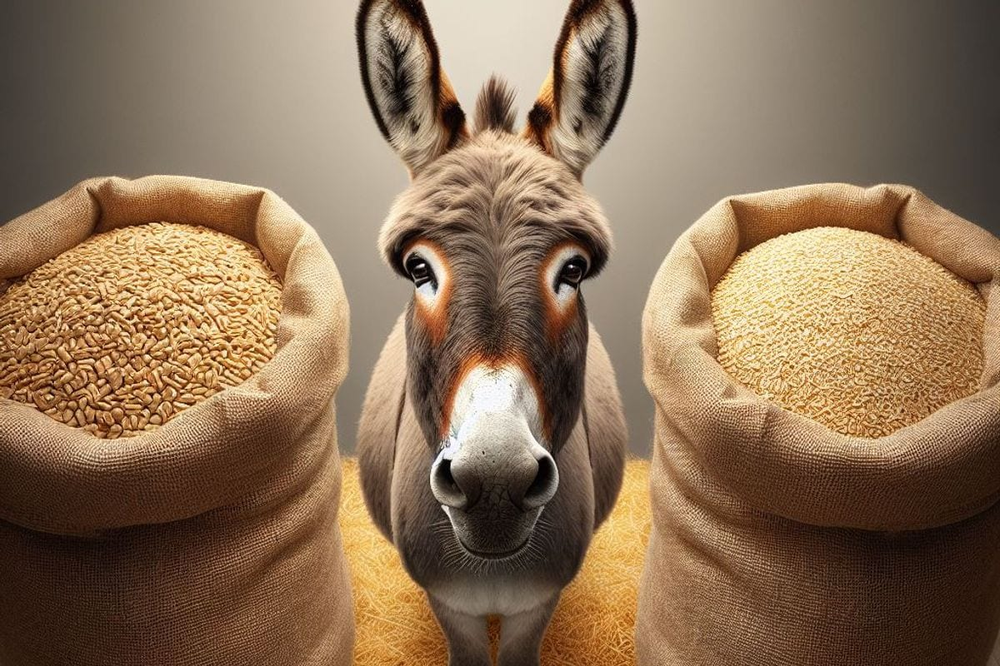

Почему изобилие парализует
Мы живём в эпоху, которая даёт нам больше возможностей, чем любая предыдущая. Сменить профессию — пожалуйста. Переехать в другую страну — легко. Начать своё дело, выучить новый язык, освоить цифровую специальность — всё доступно. Казалось бы, чем больше путей, тем легче найти свой. Но происходит обратное: именно изобилие вариантов парализует. Человек стоит на перепутье, перебирает бесконечные «а что, если» и в итоге не выбирает ничего.
Я вижу это в своей практике. И сама стояла перед выбором, когда вариантов было так много, что хотелось просто закрыть глаза.
Исторический пример: Буриданов осёл
Философский парадокс, известный ещё со времён Аристотеля, а позже приписанный французскому философу Жану Буридану, описывает осла, поставленного ровно посередине между двумя одинаковыми стогами сена.

Не в силах выбрать, какой из них лучше, осёл продолжает оценивать и сравнивать. Время идёт. Он становится всё голоднее. Цена решения растёт. Так и не сумев выбрать ни один из равнозначных вариантов, осёл в конце концов умирает от голода.
Этот пример доведён до абсурда, но он точно показывает главное: свобода выбора, доведённая до бесконечности, оборачивается полным отсутствием свободы. Если пытаться максимально рационально взвешивать похожие варианты, можно потерять всё.
Что говорят исследования
Эксперимент, ставший классикой, провели исследователи Шина Айенгар и Марк Леппер. В одном из магазинов они выставили стенд с джемом. В одном случае покупателям предлагали 24 вида, в другом — всего 6. Результат оказался ошеломляющим: из 24 позиций покупку совершили только 3% покупателей, а из 6 — 30%. При этом удовлетворённость от покупки была выше именно тогда, когда выбор был ограничен шестью вариантами. Чем больше вариантов — тем чаще мы сожалеем о сделанном выборе.
Учёные из Университета Буффало пошли дальше и измерили физиологическую реакцию. В ходе эксперимента с онлайн-программой для знакомств они регистрировали частоту сердечных сокращений и ударный объём у участников. Оказалось: чем больше возможных партнёров было перед человеком, тем сильнее он волновался и тем сложнее ему было принять решение. Исследователи назвали это «парализующим парадоксом» — состояние, когда вы хотите сделать хороший выбор, но не можете его «прочувствовать».
Российские исследователи Е. А. Безродная и К. А. Бахман в 2025 году опубликовали работу, посвящённую парадоксу выбора именно в профессиональном самоопределении. Они установили: парадокс выбора ведёт к снижению качества решений, росту тревожности и уменьшению удовлетворённости выбором. Проявляется он на трёх уровнях: когнитивном, эмоциональном и социальном.
Пример из моей практики
В моей практике это одна из самых частых и самых недооценённых тем. Ко мне приходят люди, у которых формально «всё есть»: опыт, навыки, образование, сбережения, свобода выбора. Они могут пойти в найм, могут открыть своё дело, могут уехать, могут остаться. Но именно это «могу всё» и становится ловушкой.
Один из показательных случаев: клиент, специалист с 12-летним опытом, несколько месяцев не мог определиться, остаться ли на текущей работе или уйти. Мы разбирали варианты, и каждый раз всплывало новое «а что, если». Что, если новая работа окажется хуже? Что, если я упущу что-то важное, оставшись? Что, если есть ещё какой-то третий вариант, который я не рассмотрел? В итоге он не выбрал ничего. Просто остался там, где был, — но уже без энергии и интереса. Отсутствие выбора — это тоже выбор.
Когда вариантов слишком много, мозг отказывается выбирать. Это не слабость. Это защита, которая со временем становится ловушкой.
Что делать, если вы не можете выбрать
Речь не о том, чтобы перестать видеть возможности. Речь о том, чтобы сузить поле выбора до работающего.
Признать, что идеального варианта не существует
Шварц описал два типа людей: «максимизаторы», которые ищут лучшее и разочаровываются в процессе, и «сатисфайсеры», которые выбирают «достаточно хорошее» и остаются довольны. Вторые, как правило, счастливее. Это не про снижение планки, а про реализм.
Ограничить выбор осознанно
Не «какую профессию мне выбрать из всех возможных», а «какие три варианта я готов рассмотреть в ближайшие полгода». Сужение — не потеря свободы, а условие для действия.
Опираться на ценности, а не на сравнение
Когда критерий — «лучший вариант», вы обречены на сомнения. Когда критерий — «это соответствует тому, что для меня важно», выбор становится возможным. Подробнее о том, как определить свои ценности, — в статье «Ценности как компас: на что опираться, чтобы принимать верные решения».
Вывод
Изобилие возможностей — это привилегия. Но привилегия, которая требует навыка. Навыка выбирать не лучшее, а своё. Навыка действовать, не дожидаясь полной уверенности. Навыка принимать, что любой выбор означает отказ от чего-то другого — и это нормально.